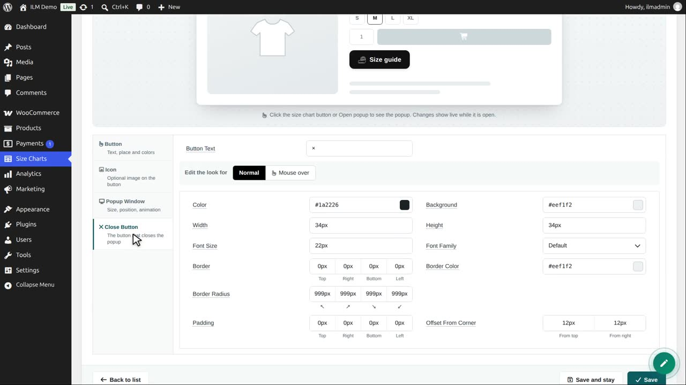
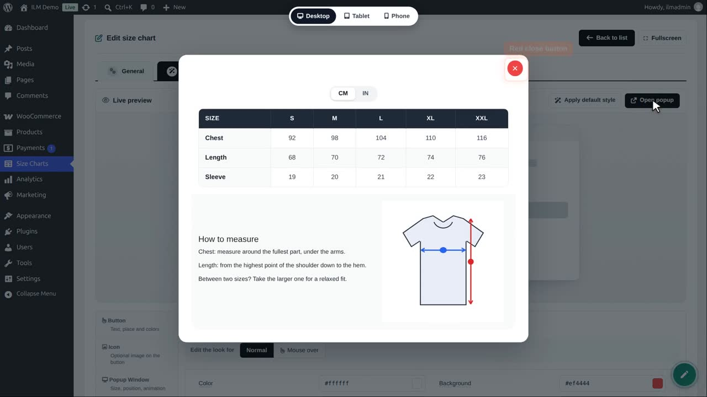
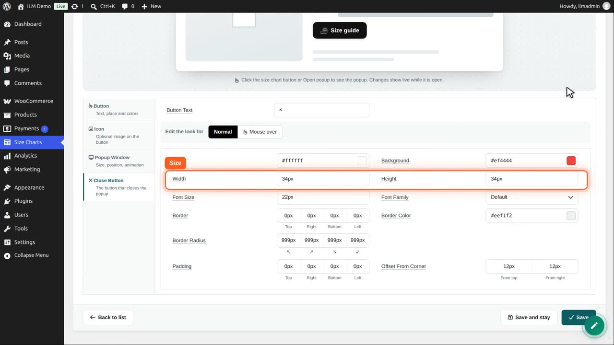
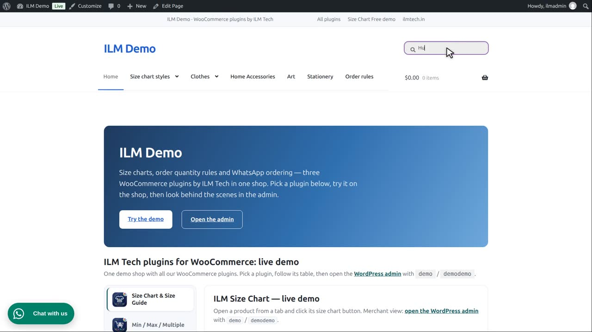
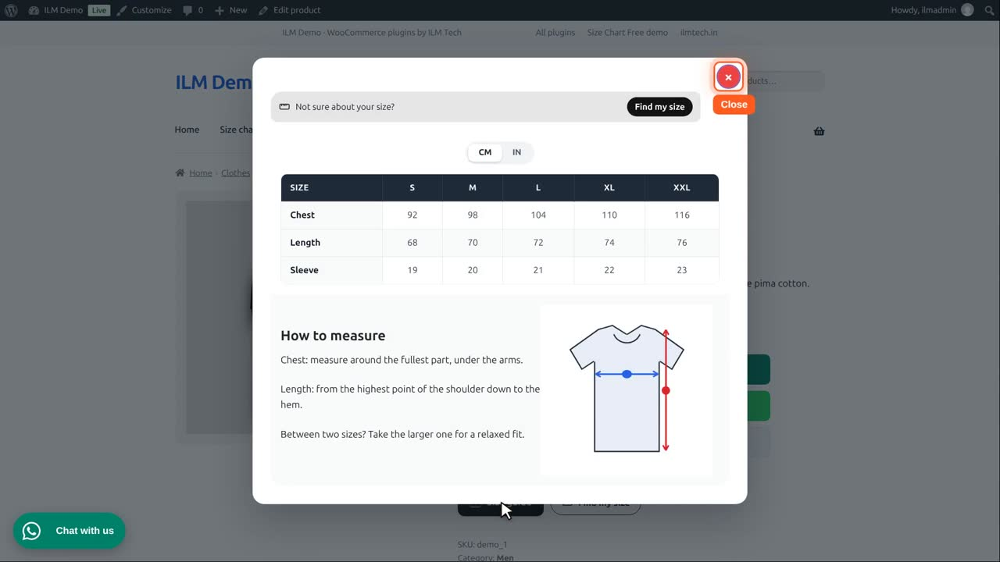

Edit the chart, open Popup Button, then Close Button.

We make it red with a white cross, and open the preview to see it.

Width, height and font size set its size. Button text can be a cross or a word like Close.

Offset from corner moves it from the top right corner. A negative value puts it just outside the window.

Save. In the shop, the window has the red close button. Escape and a click on the dimmed page close it too.

The mouse-over look of the close button is set with the Mouse over switch, like the size chart button.